タップするとゲームが始まります。名前はすべて仮です。
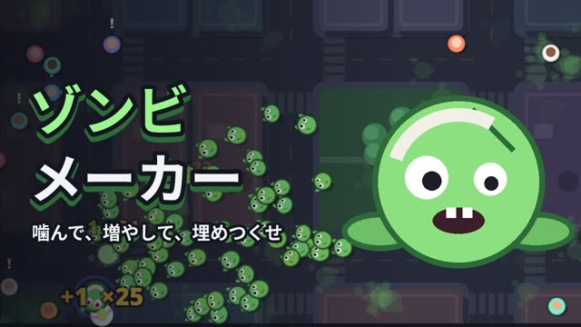
試作1人にふれて仲間を増やし、群れで街を埋めつくそう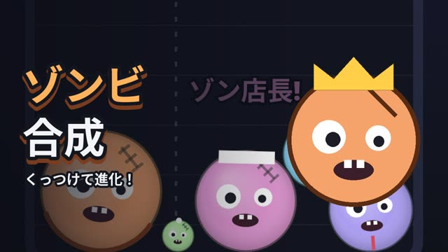
試作2同じものをくっつけて、大きく進化させよう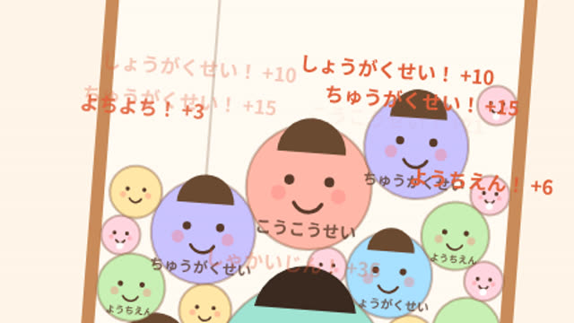
試作3ゆれるゆりかごに落として、同じ子どうしを合体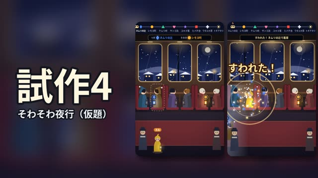
試作4夜行列車で、次に降りる人の前に立って早く座ろう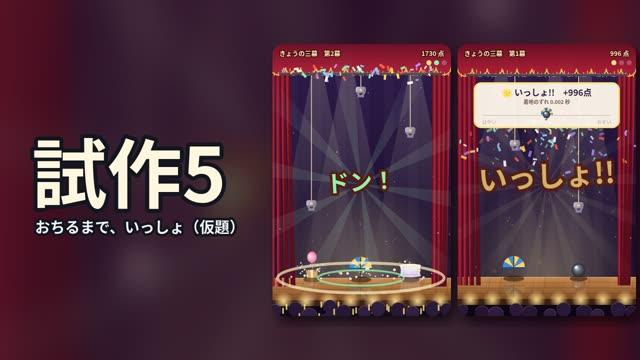
試作5重さのちがう物を、同じしゅんかんに着地させよう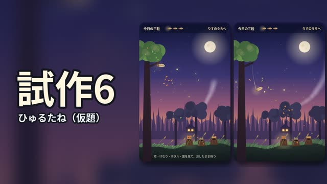
試作6見えない風を読んで、種を森の友だちのうろへ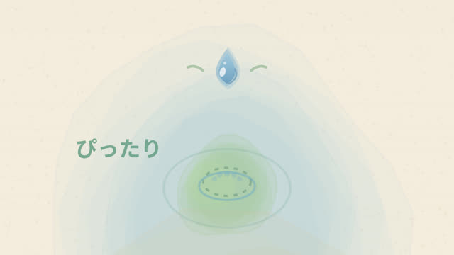
試作7しずくの拍でタップ。ずれた にせのしずくは がまん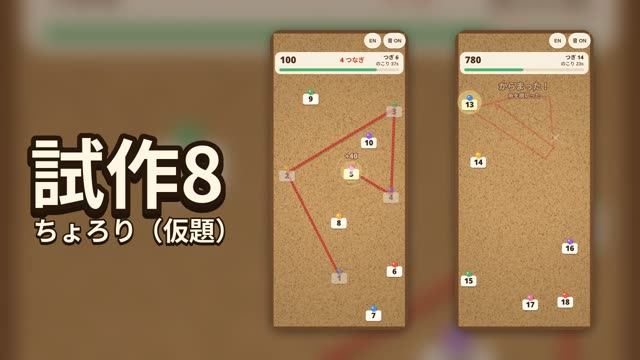
試作8指をはなさず、1→2→3… と毛糸をかけよう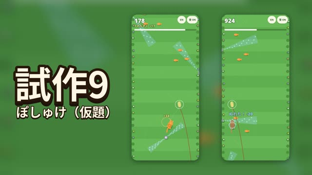
試作9じゃらしで猫をさそって、水しぶきの庭をかけぬけよう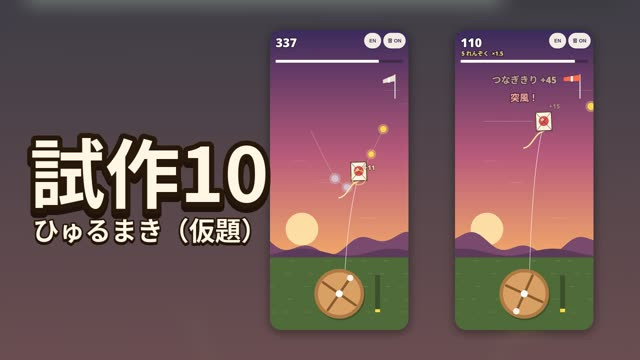
試作10糸巻きを回して、凧でひかりの玉をつなごう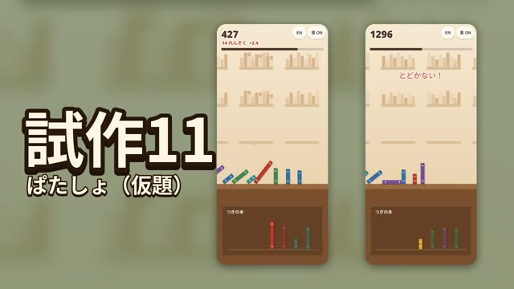
試作11本をドミノみたいに倒して、ぱたぱたつなげよう